Introduction
In the rapidly evolving landscape of energy storage technology, battery packs serve as critical components across diverse applications, from powering electric vehicles to stabilizing electrical grids. However, not all battery packs are created equal. Power battery packs and energy storage battery packs represent two distinct categories, each engineered to meet specific performance requirements and operational demands.
Power battery packs are designed primarily for high-power applications requiring rapid energy delivery and dynamic performance, such as electric vehicles, drones, and power tools. In contrast, energy storage battery packs prioritize long-term energy storage and sustained power output for applications like grid storage, renewable energy integration, and backup power systems.
Understanding these fundamental differences is crucial for engineers, manufacturers, and end-users to make informed decisions about battery technology selection and system design.
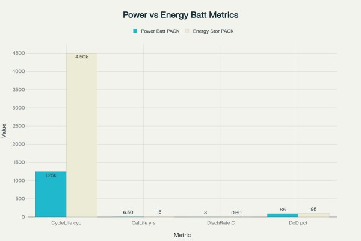
Fundamental Design Philosophy
Power Battery Packs: Performance-Driven Design
Power battery packs are engineered with a performance-first philosophy, prioritizing high power density and rapid energy delivery over longevity. These systems must deliver substantial current bursts to support acceleration in electric vehicles or provide instantaneous power for high-demand applications. The design emphasizes minimizing internal resistance and maximizing power output capabilities.
The fundamental requirement for power batteries is to provide high discharge rates, typically operating at 1C to 5C or higher, meaning they can discharge their full capacity in one hour or less. This capability is essential for electric vehicles that need to accelerate quickly or climb steep inclines, requiring immediate access to stored energy.
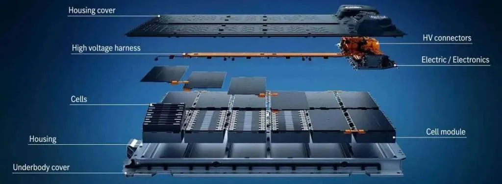
Energy Storage Battery Packs: Longevity-Focused Design
Energy storage battery packs adopt a longevity-focused approach, prioritizing cycle life, energy capacity, and cost-effectiveness over peak power performance. These systems are designed to operate efficiently over extended periods, often decades, making them ideal for grid-scale applications where reliability and long-term economic viability are paramount.
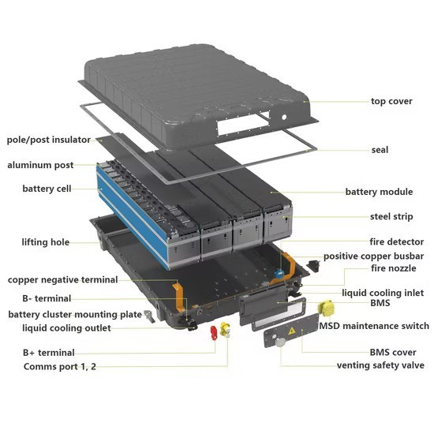
Energy storage systems typically operate at lower discharge rates of 0.2C to 1C, allowing for sustained energy delivery over hours or days rather than the burst power required by mobile applications. This conservative operating approach significantly extends battery life and reduces degradation.
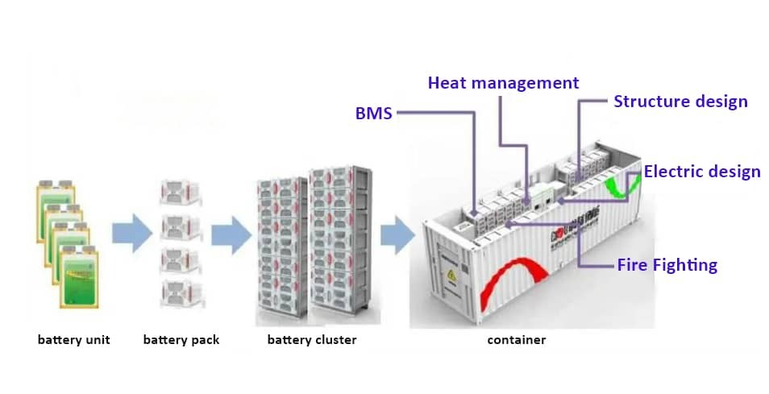
Technical Specifications Comparison
Capacity and Energy Density
Power batteries typically feature moderate capacity ranging from 1000-1500mAh at the cell level, optimized for weight and space constraints in mobile applications. However, energy storage batteries prioritize higher capacity, often exceeding 2000mAh per cell, as space and weight constraints are less critical in stationary applications.
Energy storage systems can accommodate larger, heavier battery configurations since they don't need to be transported, allowing for optimization around cost per kWh rather than energy density per kilogram. This fundamental difference enables energy storage systems to achieve better long-term economics despite potentially lower energy density.
Discharge Characteristics and C-Rates
The discharge characteristics represent one of the most significant differences between these battery types. Power batteries must deliver high current output quickly, requiring low internal resistance and robust current collectors. This capability comes at the cost of higher internal heating and faster degradation.
Energy storage batteries operate at lower discharge rates, which reduces stress on the cells and extends operational life. The moderate discharge requirements allow for optimized cell chemistry and construction that prioritizes longevity over peak performance.
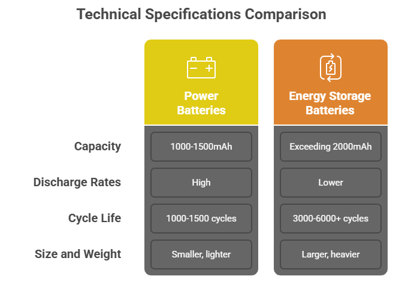
Cycle Life and Durability
Power batteries typically achieve 1000-1500 charge/discharge cycles before reaching end-of-life criteria, reflecting the demanding operational conditions and high-rate cycling. While this may seem limited, it translates to 5-8 years of operational life in typical electric vehicle applications.
Energy storage batteries are designed for 3000-6000+ cycles, with some systems achieving even higher cycle counts through conservative operating parameters. This extended cycle life is crucial for grid applications where battery replacement costs significantly impact project economics.
Battery Management Systems (BMS)
Power Battery BMS: Real-Time Performance Management
Power battery management systems require sophisticated real-time monitoring capabilities to manage the complex dynamics of high-power applications. These systems must rapidly respond to changing power demands, monitor cell temperatures during high-current discharge, and implement active balancing to maintain performance.
The BMS in power applications calculates numerous state parameters including State of Charge (SOC), State of Health (SOH), and power capability in real-time to support vehicle control systems. Communication protocols primarily use CAN bus for fast, reliable data exchange with vehicle controllers.
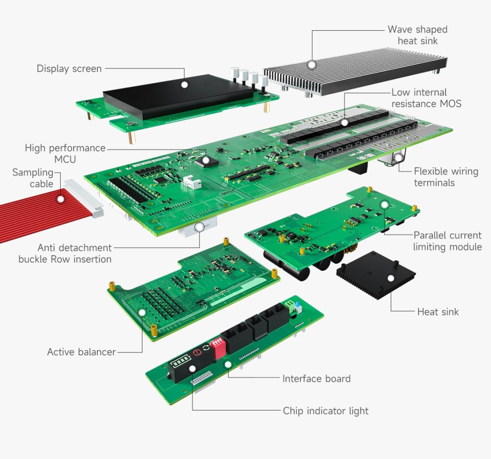
Energy Storage BMS: Long-Term Health Management
Energy storage BMS systems focus on long-term battery health optimization rather than instantaneous performance. These systems typically use passive balancing techniques and operate with longer monitoring intervals, as rapid response is less critical.
The communication architecture for energy storage BMS is more diverse, incorporating CAN, Modbus, and TCP/IP protocols to interface with energy management systems (EMS) and power conversion systems (PCS). This flexibility allows integration with diverse grid infrastructure and renewable energy systems.
Thermal Management Requirements
Active Thermal Management for Power Applications
Power battery packs require sophisticated thermal management due to the high heat generation from rapid charge/discharge cycles. These systems typically employ liquid cooling with pumps, radiators, and temperature sensors to maintain optimal operating temperatures between 20-45°C.
The thermal management system must respond quickly to temperature changes during acceleration or fast charging events, requiring active cooling and heating capabilities. This complexity adds weight, cost, and maintenance requirements but is essential for safety and performance.
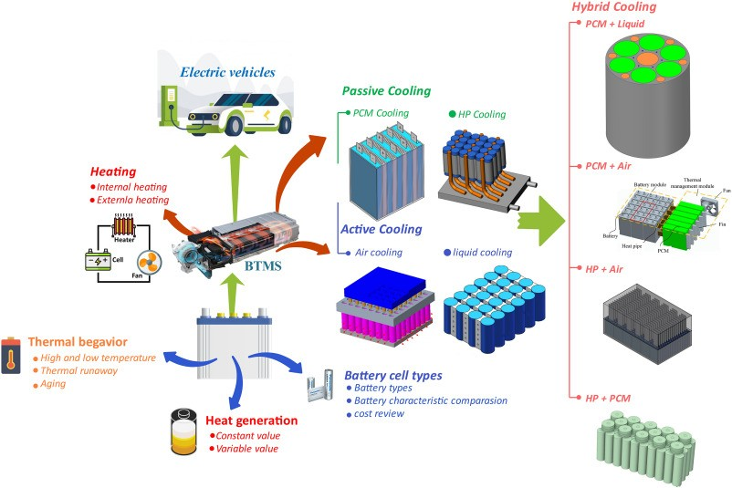
Passive and Hybrid Thermal Solutions for Energy Storage
Energy storage applications can often utilize passive or hybrid thermal management approaches due to their lower heat generation rates. The stationary nature of these systems allows for larger heat sinks, natural convection cooling, and integration with building HVAC systems.
While still requiring temperature monitoring and control, energy storage thermal management systems can operate with slower response times and less complex control strategies, reducing overall system cost and complexity.
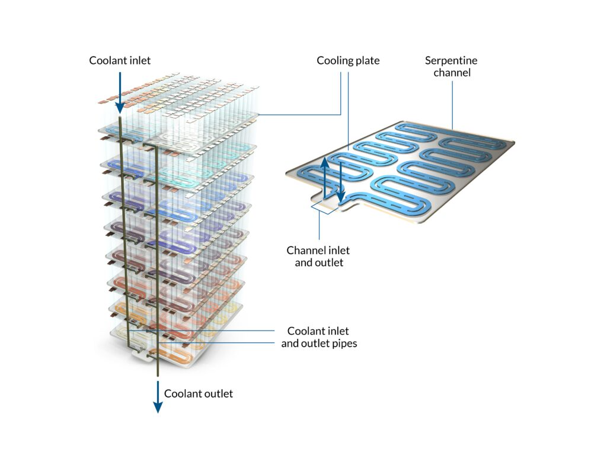
Safety Standards and Regulations
Automotive Safety Standards for Power Batteries
Power battery packs must comply with stringent automotive safety standards including UL 2580, which addresses the unique challenges of mobile applications. These standards require extensive testing for crash scenarios, vibration resistance, and thermal runaway prevention.
The mobile nature of power applications introduces additional safety considerations including collision resistance, electrical isolation, and emergency response procedures. Battery packs must withstand mechanical stress, temperature extremes, and potential abuse conditions.

Industrial Safety Standards for Energy Storage
Energy storage systems typically follow industrial safety standards such as IEC 62619, which addresses stationary applications and larger-scale systems. These standards focus on long-term reliability, fire prevention, and integration with electrical infrastructure.
While generally operating in more controlled environments, energy storage systems must address unique risks including large-scale thermal runaway propagation and integration with high-voltage grid infrastructure. Safety systems emphasize prevention and containment rather than crash resistance.
Cost Structure and Economics
Power Battery Cost Considerations
Power battery pack costs are dominated by battery cells (approximately 80% of total cost), with the remaining 20% allocated to BMS, thermal management, and structural components. The emphasis on high-performance cells and sophisticated control systems drives higher per-kWh costs.
However, the shorter operational lifespan (5-8 years) means that total cost of ownership must be evaluated over fewer cycles, making initial cost per kWh less critical than performance metrics. The mobility requirement also necessitates lightweight, compact designs that command premium pricing.
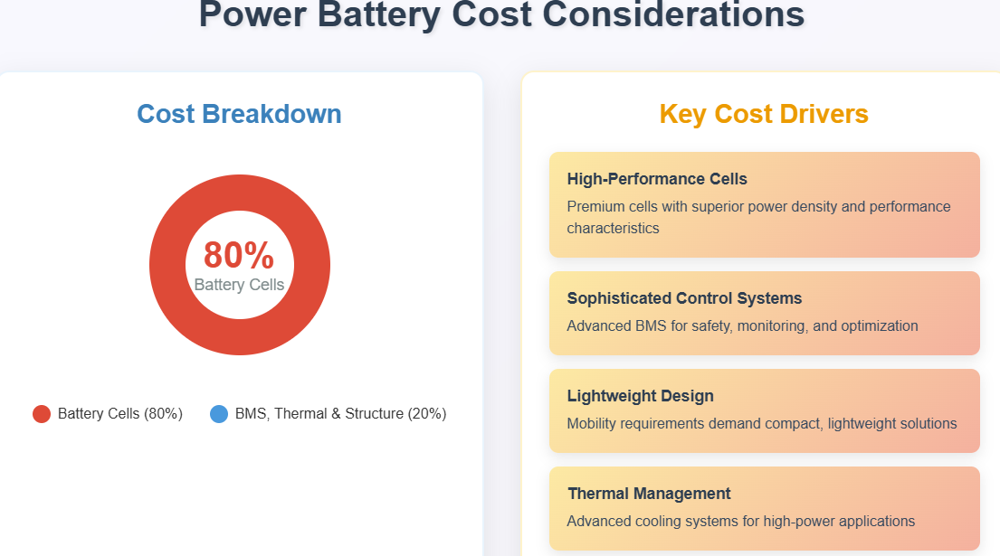
Energy Storage Economic Optimization
Energy storage systems allocate approximately 60% of costs to batteries and 40% to power electronics, energy management systems, and balance of plant components. This distribution reflects the importance of power conversion and grid integration equipment in stationary applications.
The extended operational life (10-20 years) allows energy storage systems to optimize for lowest lifecycle cost per kWh rather than initial purchase price. This economic model favors robust, long-life designs even if initial costs are higher.
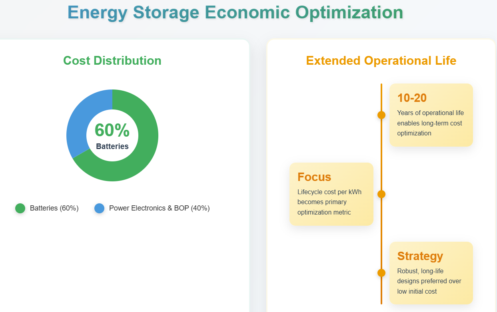
Applications and Market Segments
Power Battery Applications
Power battery packs serve applications requiring high power density and mobility, including electric vehicles, electric aircraft, power tools, and robotics. These applications demand rapid energy delivery, compact form factors, and tolerance for dynamic operating conditions.
The electric vehicle market represents the largest application segment, driving innovations in fast charging, thermal management, and safety systems. Emerging applications in electric aviation and marine transport push power density requirements even higher.
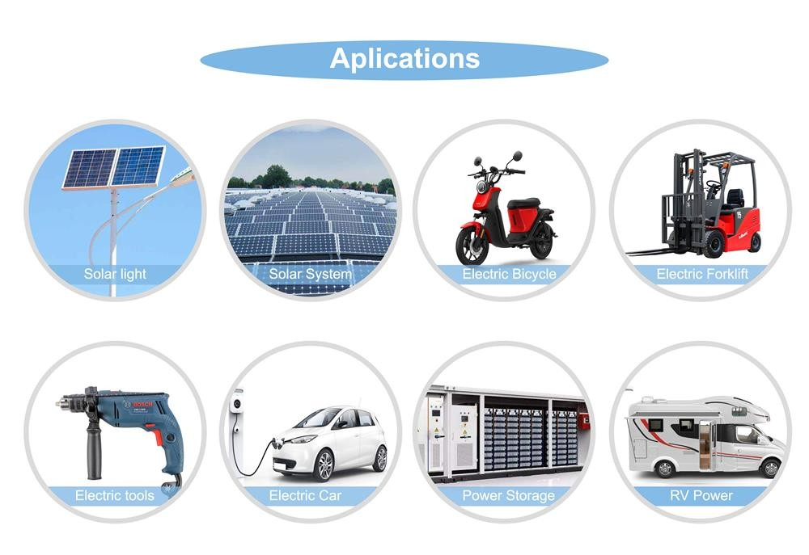
Energy Storage Applications
Energy storage battery packs primarily serve grid-scale and renewable integration applications, including utility-scale storage, residential solar systems, and backup power installations. These systems prioritize energy capacity, long-term reliability, and grid integration capabilities.
The growing renewable energy sector drives demand for energy storage systems that can store excess solar and wind generation for later use, requiring systems optimized for daily cycling over decades of operation. Commercial and industrial applications also utilize energy storage for peak shaving and demand management.
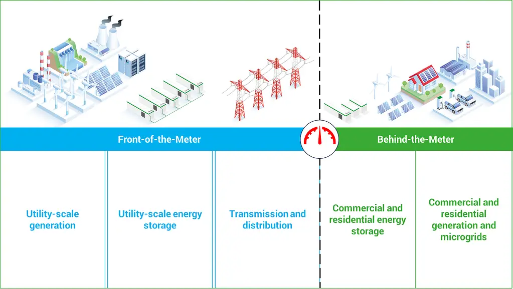
Future Trends and Development Directions
Power Battery Innovation Focus
Power battery development continues to emphasize higher energy density and faster charging capabilities while maintaining safety and durability. Advances in cell chemistry, particularly silicon anodes and solid-state electrolytes, promise significant improvements in performance.
Thermal management innovations, including immersion cooling and phase change materials, aim to handle higher power densities while reducing system complexity. Integration with vehicle systems continues to evolve toward more sophisticated predictive control and optimization.
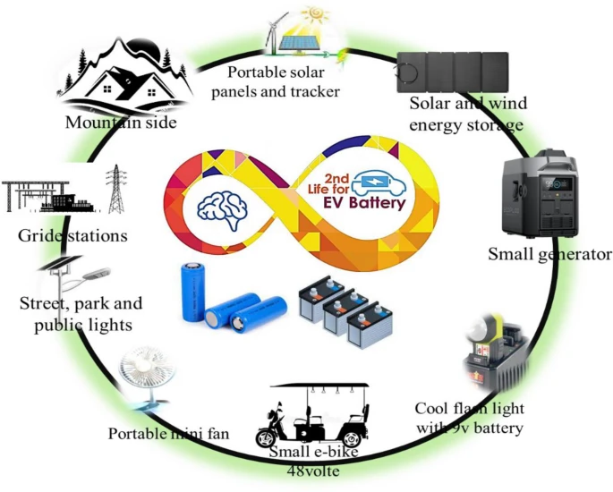
Energy Storage Technology Evolution
Energy storage development focuses on cost reduction and cycle life extension through improved cell chemistry and system optimization. Second-life applications for retired EV batteries present opportunities for cost-effective energy storage solutions.
Grid integration capabilities continue to advance with improved inverter technology, advanced control algorithms, and better forecasting systems. The emergence of long-duration storage technologies addresses the need for seasonal energy storage and grid stability.
Conclusion
Power battery packs and energy storage battery packs represent fundamentally different approaches to energy storage, each optimized for distinct applications and performance requirements. Power batteries prioritize high power density, rapid response, and mobility, accepting shorter lifespans in exchange for superior performance. Energy storage batteries emphasize longevity, cost-effectiveness, and sustained energy delivery, optimizing for decades of reliable operation.